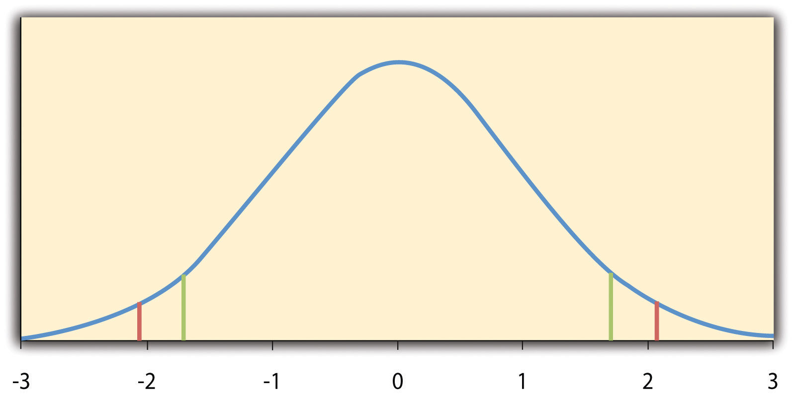
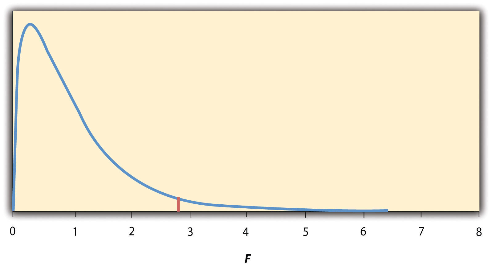

In this section, we look at several common null hypothesis testing procedures. The emphasis here is on providing enough information to allow you to conduct and interpret the most basic versions. In most cases, the online statistical analysis tools mentioned in Chapter 12 "Descriptive Statistics" will handle the computations—as will programs such as Microsoft Excel and SPSS.
As we have seen throughout this book, many studies in psychology focus on the difference between two means. The most common null hypothesis test for this type of statistical relationship is the t testA family of null hypothesis tests used to compare two means.. In this section, we look at three types of t tests that are used for slightly different research designs: the one-sample t test, the dependent-samples t test, and the independent-samples t test.
The one-sample t testA null hypothesis test used to compare one sample mean with a hypothetical population mean that provides an interesting standard of comparison. is used to compare a sample mean (M) with a hypothetical population mean (μ0) that provides some interesting standard of comparison. The null hypothesis is that the mean for the population (µ) is equal to the hypothetical population mean: μ = μ0. The alternative hypothesis is that the mean for the population is different from the hypothetical population mean: μ ≠ μ0. To decide between these two hypotheses, we need to find the probability of obtaining the sample mean (or one more extreme) if the null hypothesis were true. But finding this p value requires first computing a test statistic called t. (A test statisticIn null hypothesis testing, a statistic such as t or F that is computed only to help find the p value for the sample result. is a statistic that is computed only to help find the p value.) The formula for t is as follows:

Again, M is the sample mean and µ0 is the hypothetical population mean of interest. SD is the sample standard deviation and N is the sample size.
The reason the t statistic (or any test statistic) is useful is that we know how it is distributed when the null hypothesis is true. As shown in Figure 13.1 "Distribution of ", this distribution is unimodal and symmetrical, and it has a mean of 0. Its precise shape depends on a statistical concept called the degrees of freedom, which for a one-sample t test is N − 1. (There are 24 degrees of freedom for the distribution shown in Figure 13.1 "Distribution of ".) The important point is that knowing this distribution makes it possible to find the p value for any t score. Consider, for example, a t score of +1.50 based on a sample of 25. The probability of a t score at least this extreme is given by the proportion of t scores in the distribution that are at least this extreme. For now, let us define extreme as being far from zero in either direction. Thus the p value is the proportion of t scores that are +1.50 or above or that are −1.50 or below—a value that turns out to be .14.
Figure 13.1 Distribution of t Scores (With 24 Degrees of Freedom) When the Null Hypothesis Is True
The red vertical lines represent the two-tailed critical values, and the green vertical lines the one-tailed critical values when α = .05.
Fortunately, we do not have to deal directly with the distribution of t scores. If we were to enter our sample data and hypothetical mean of interest into one of the online statistical tools in Chapter 12 "Descriptive Statistics" or into a program like SPSS (Excel does not have a one-sample t test function), the output would include both the t score and the p value. At this point, the rest of the procedure is simple. If p is less than .05, we reject the null hypothesis and conclude that the population mean differs from the hypothetical mean of interest. If p is greater than .05, we retain the null hypothesis and conclude that there is not enough evidence to say that the population mean differs from the hypothetical mean of interest. (Again, technically, we conclude only that we do not have enough evidence to conclude that it does differ.)
If we were to compute the t score by hand, we could use a table like Table 13.2 "Table of Critical Values of " to make the decision. This table does not provide actual p values. Instead, it provides the critical valuesIn null hypothesis testing, the value or values of a test statistic that correspond to a p value of .05 and therefore serve as a cutoff for deciding to reject the null hypothesis. of t for different degrees of freedom (df) when α is .05. For now, let us focus on the two-tailed critical values in the last column of the table. Each of these values should be interpreted as a pair of values: one positive and one negative. For example, the two-tailed critical values when there are 24 degrees of freedom are +2.064 and −2.064. These are represented by the red vertical lines in Figure 13.1 "Distribution of ". The idea is that any t score below the lower critical value (the left-hand red line in Figure 13.1 "Distribution of ") is in the lowest 2.5% of the distribution, while any t score above the upper critical value (the right-hand red line) is in the highest 2.5% of the distribution. This means that any t score beyond the critical value in either direction is in the most extreme 5% of t scores when the null hypothesis is true and therefore has a p value less than .05. Thus if the t score we compute is beyond the critical value in either direction, then we reject the null hypothesis. If the t score we compute is between the upper and lower critical values, then we retain the null hypothesis.
Table 13.2 Table of Critical Values of t When α = .05
| Critical value | ||
|---|---|---|
| df | One-tailed | Two-tailed |
| 3 | 2.353 | 3.182 |
| 4 | 2.132 | 2.776 |
| 5 | 2.015 | 2.571 |
| 6 | 1.943 | 2.447 |
| 7 | 1.895 | 2.365 |
| 8 | 1.860 | 2.306 |
| 9 | 1.833 | 2.262 |
| 10 | 1.812 | 2.228 |
| 11 | 1.796 | 2.201 |
| 12 | 1.782 | 2.179 |
| 13 | 1.771 | 2.160 |
| 14 | 1.761 | 2.145 |
| 15 | 1.753 | 2.131 |
| 16 | 1.746 | 2.120 |
| 17 | 1.740 | 2.110 |
| 18 | 1.734 | 2.101 |
| 19 | 1.729 | 2.093 |
| 20 | 1.725 | 2.086 |
| 21 | 1.721 | 2.080 |
| 22 | 1.717 | 2.074 |
| 23 | 1.714 | 2.069 |
| 24 | 1.711 | 2.064 |
| 25 | 1.708 | 2.060 |
| 30 | 1.697 | 2.042 |
| 35 | 1.690 | 2.030 |
| 40 | 1.684 | 2.021 |
| 45 | 1.679 | 2.014 |
| 50 | 1.676 | 2.009 |
| 60 | 1.671 | 2.000 |
| 70 | 1.667 | 1.994 |
| 80 | 1.664 | 1.990 |
| 90 | 1.662 | 1.987 |
| 100 | 1.660 | 1.984 |
Thus far, we have considered what is called a two-tailed testA null hypothesis test (e.g., a t test or test of Pearson’s r) in which the null hypothesis is rejected if the sample result is extreme in either direction. Used when the researcher does not have a strong expectation about the direction of the relationship., where we reject the null hypothesis if the t score for the sample is extreme in either direction. This makes sense when we believe that the sample mean might differ from the hypothetical population mean but we do not have good reason to expect the difference to go in a particular direction. But it is also possible to do a one-tailed testA null hypothesis test (e.g., a t test or test of Pearson’s r) in which the null hypothesis is rejected only if the sample result is extreme in one direction specified before the data are collected. Used when the researcher has a strong expectation about the direction of the relationship., where we reject the null hypothesis only if the t score for the sample is extreme in one direction that we specify before collecting the data. This makes sense when we have good reason to expect the sample mean will differ from the hypothetical population mean in a particular direction.
Here is how it works. Each one-tailed critical value in Table 13.2 "Table of Critical Values of " can again be interpreted as a pair of values: one positive and one negative. A t score below the lower critical value is in the lowest 5% of the distribution, and a t score above the upper critical value is in the highest 5% of the distribution. For 24 degrees of freedom, these values are −1.711 and +1.711. (These are represented by the green vertical lines in Figure 13.1 "Distribution of ".) However, for a one-tailed test, we must decide before collecting data whether we expect the sample mean to be lower than the hypothetical population mean, in which case we would use only the lower critical value, or we expect the sample mean to be greater than the hypothetical population mean, in which case we would use only the upper critical value. Notice that we still reject the null hypothesis when the t score for our sample is in the most extreme 5% of the t scores we would expect if the null hypothesis were true—so α remains at .05. We have simply redefined extreme to refer only to one tail of the distribution. The advantage of the one-tailed test is that critical values are less extreme. If the sample mean differs from the hypothetical population mean in the expected direction, then we have a better chance of rejecting the null hypothesis. The disadvantage is that if the sample mean differs from the hypothetical population mean in the unexpected direction, then there is no chance at all of rejecting the null hypothesis.
Imagine that a health psychologist is interested in the accuracy of college students’ estimates of the number of calories in a chocolate chip cookie. He shows the cookie to a sample of 10 students and asks each one to estimate the number of calories in it. Because the actual number of calories in the cookie is 250, this is the hypothetical population mean of interest (µ0). The null hypothesis is that the mean estimate for the population (μ) is 250. Because he has no real sense of whether the students will underestimate or overestimate the number of calories, he decides to do a two-tailed test. Now imagine further that the participants’ actual estimates are as follows:
250, 280, 200, 150, 175, 200, 200, 220, 180, 250.The mean estimate for the sample (M) is 212.00 calories and the standard deviation (SD) is 39.17. The health psychologist can now compute the t score for his sample:
If he enters the data into one of the online analysis tools or uses SPSS, it would also tell him that the two-tailed p value for this t score (with 10 − 1 = 9 degrees of freedom) is .013. Because this is less than .05, the health psychologist would reject the null hypothesis and conclude that college students tend to underestimate the number of calories in a chocolate chip cookie. If he computes the t score by hand, he could look at Table 13.2 "Table of Critical Values of " and see that the critical value of t for a two-tailed test with 9 degrees of freedom is ±2.262. The fact that his t score was more extreme than this critical value would tell him that his p value is less than .05 and that he should reject the null hypothesis.
Finally, if this researcher had gone into this study with good reason to expect that college students underestimate the number of calories, then he could have done a one-tailed test instead of a two-tailed test. The only thing this would change is the critical value, which would be −1.833. This slightly less extreme value would make it a bit easier to reject the null hypothesis. However, if it turned out that college students overestimate the number of calories—no matter how much they overestimate it—the researcher would not have been able to reject the null hypothesis.
The dependent-samples t testA null hypothesis test used to compare two means for one sample measured at two different times or under two different conditions—as in a pretest-posttest or within-subjects design. (sometimes called the paired-samples t test) is used to compare two means for the same sample tested at two different times or under two different conditions. This makes it appropriate for pretest-posttest designs or within-subjects experiments. The null hypothesis is that the means at the two times or under the two conditions are the same in the population. The alternative hypothesis is that they are not the same. This test can also be one-tailed if the researcher has good reason to expect the difference goes in a particular direction.
It helps to think of the dependent-samples t test as a special case of the one-sample t test. However, the first step in the dependent-samples t test is to reduce the two scores for each participant to a single difference scoreThe difference between an individual’s score at one time or under one condition and that individual’s score at a second time or under a second condition. The dependent-samples t test is in essence a one-sample t test on a set of difference scores. by taking the difference between them. At this point, the dependent-samples t test becomes a one-sample t test on the difference scores. The hypothetical population mean (µ0) of interest is 0 because this is what the mean difference score would be if there were no difference on average between the two times or two conditions. We can now think of the null hypothesis as being that the mean difference score in the population is 0 (µ0 = 0) and the alternative hypothesis as being that the mean difference score in the population is not 0 (µ0 ≠ 0).
Imagine that the health psychologist now knows that people tend to underestimate the number of calories in junk food and has developed a short training program to improve their estimates. To test the effectiveness of this program, he conducts a pretest-posttest study in which 10 participants estimate the number of calories in a chocolate chip cookie before the training program and then again afterward. Because he expects the program to increase the participants’ estimates, he decides to do a one-tailed test. Now imagine further that the pretest estimates are
230, 250, 280, 175, 150, 200, 180, 210, 220, 190and that the posttest estimates (for the same participants in the same order) are
250, 260, 250, 200, 160, 200, 200, 180, 230, 240.The difference scores, then, are as follows:
+20, +10, −30, +25, +10, 0, +20, −30, +10, +50.Note that it does not matter whether the first set of scores is subtracted from the second or the second from the first as long as it is done the same way for all participants. In this example, it makes sense to subtract the pretest estimates from the posttest estimates so that positive difference scores mean that the estimates went up after the training and negative difference scores mean the estimates went down.
The mean of the difference scores is 8.50 with a standard deviation of 27.27. The health psychologist can now compute the t score for his sample as follows:
If he enters the data into one of the online analysis tools or uses Excel or SPSS, it would tell him that the one-tailed p value for this t score (again with 10 − 1 = 9 degrees of freedom) is .148. Because this is greater than .05, he would retain the null hypothesis and conclude that the training program does not increase people’s calorie estimates. If he were to compute the t score by hand, he could look at Table 13.2 "Table of Critical Values of " and see that the critical value of t for a one-tailed test with 9 degrees of freedom is +1.833. (It is positive this time because he was expecting a positive mean difference score.) The fact that his t score was less extreme than this critical value would tell him that his p value is greater than .05 and that he should fail to reject the null hypothesis.
The independent-samples t testA null hypothesis test used to compare means for two separate samples—as in a between-subjects design. is used to compare the means of two separate samples (M1 and M2). The two samples might have been tested under different conditions in a between-subjects experiment, or they could be preexisting groups in a correlational design (e.g., women and men, extroverts and introverts). The null hypothesis is that the means of the two populations are the same: µ1 = µ2. The alternative hypothesis is that they are not the same: µ1 ≠ µ2. Again, the test can be one-tailed if the researcher has good reason to expect the difference goes in a particular direction.
The t statistic here is a bit more complicated because it must take into account two sample means, two standard deviations, and two sample sizes. The formula is as follows:
Notice that this formula includes squared standard deviations (the variances) that appear inside the square root symbol. Also, lowercase n1 and n2 refer to the sample sizes in the two groups or condition (as opposed to capital N, which generally refers to the total sample size). The only additional thing to know here is that there are N − 2 degrees of freedom for the independent-samples t test.
Now the health psychologist wants to compare the calorie estimates of people who regularly eat junk food with the estimates of people who rarely eat junk food. He believes the difference could come out in either direction so he decides to conduct a two-tailed test. He collects data from a sample of eight participants who eat junk food regularly and seven participants who rarely eat junk food. The data are as follows:
Junk food eaters: 180, 220, 150, 85, 200, 170, 150, 190
Non–junk food eaters: 200, 240, 190, 175, 200, 300, 240
The mean for the junk food eaters is 220.71 with a standard deviation of 41.23. The mean for the non–junk food eaters is 168.12 with a standard deviation of 42.66. He can now compute his t score as follows:

If he enters the data into one of the online analysis tools or uses Excel or SPSS, it would tell him that the two-tailed p value for this t score (with 15 − 2 = 13 degrees of freedom) is .015. Because this is less than .05, the health psychologist would reject the null hypothesis and conclude that people who eat junk food regularly make lower calorie estimates than people who eat it rarely. If he were to compute the t score by hand, he could look at Table 13.2 "Table of Critical Values of " and see that the critical value of t for a two-tailed test with 13 degrees of freedom is ±2.160. The fact that his t score was more extreme than this critical value would tell him that his p value is less than .05 and that he should fail to retain the null hypothesis.
When there are more than two groups or condition means to be compared, the most common null hypothesis test is the analysis of variance (ANOVA)A null hypothesis test used to compare means for more than two groups or conditions.. In this section, we look primarily at the one-way ANOVAA null hypothesis test used to compare more than two means in a between-subjects design with one independent variable., which is used for between-subjects designs with a single independent variable. We then briefly consider some other versions of the ANOVA that are used for within-subjects and factorial research designs.
The one-way ANOVA is used to compare the means of more than two samples (M1, M2…MG) in a between-subjects design. The null hypothesis is that all the means are equal in the population: µ1= µ2 =…= µG. The alternative hypothesis is that not all the means in the population are equal.
The test statistic for the ANOVA is called F. It is a ratio of two estimates of the population variance based on the sample data. One estimate of the population variance is called the mean squares between groups (MSB)In an analysis of variance, an estimate for the population variance based only on differences among the group or condition means. and is based on the differences among the sample means. The other is called the mean squares within groups (MSW)In an analysis of variance, an estimate of the population variance based on the variability within each group or condition. and is based on the differences among the scores within each group. The F statistic is the ratio of the MSB to the MSW and can therefore be expressed as follows:
Again, the reason that F is useful is that we know how it is distributed when the null hypothesis is true. As shown in Figure 13.2 "Distribution of the ", this distribution is unimodal and positively skewed with values that cluster around 1. The precise shape of the distribution depends on both the number of groups and the sample size, and there is a degrees of freedom value associated with each of these. The between-groups degrees of freedom is the number of groups minus one: dfB = (G − 1). The within-groups degrees of freedom is the total sample size minus the number of groups: dfW = N − G. Again, knowing the distribution of F when the null hypothesis is true allows us to find the p value.
Figure 13.2 Distribution of the F Ratio With 2 and 37 Degrees of Freedom When the Null Hypothesis Is True
The red vertical line represents the critical value when α is .05.
The online tools in Chapter 12 "Descriptive Statistics" and statistical software such as Excel and SPSS will compute F and find the p value. If p is less than .05, then we reject the null hypothesis and conclude that there are differences among the group means in the population. If p is greater than .05, then we retain the null hypothesis and conclude that there is not enough evidence to say that there are differences. In the unlikely event that we would compute F by hand, we can use a table of critical values like Table 13.3 "Table of Critical Values of " to make the decision. The idea is that any F ratio greater than the critical value has a p value of less than .05. Thus if the F ratio we compute is beyond the critical value, then we reject the null hypothesis. If the F ratio we compute is less than the critical value, then we retain the null hypothesis.
Table 13.3 Table of Critical Values of F When α = .05
| dfB | |||
|---|---|---|---|
| dfW | 2 | 3 | 4 |
| 8 | 4.459 | 4.066 | 3.838 |
| 9 | 4.256 | 3.863 | 3.633 |
| 10 | 4.103 | 3.708 | 3.478 |
| 11 | 3.982 | 3.587 | 3.357 |
| 12 | 3.885 | 3.490 | 3.259 |
| 13 | 3.806 | 3.411 | 3.179 |
| 14 | 3.739 | 3.344 | 3.112 |
| 15 | 3.682 | 3.287 | 3.056 |
| 16 | 3.634 | 3.239 | 3.007 |
| 17 | 3.592 | 3.197 | 2.965 |
| 18 | 3.555 | 3.160 | 2.928 |
| 19 | 3.522 | 3.127 | 2.895 |
| 20 | 3.493 | 3.098 | 2.866 |
| 21 | 3.467 | 3.072 | 2.840 |
| 22 | 3.443 | 3.049 | 2.817 |
| 23 | 3.422 | 3.028 | 2.796 |
| 24 | 3.403 | 3.009 | 2.776 |
| 25 | 3.385 | 2.991 | 2.759 |
| 30 | 3.316 | 2.922 | 2.690 |
| 35 | 3.267 | 2.874 | 2.641 |
| 40 | 3.232 | 2.839 | 2.606 |
| 45 | 3.204 | 2.812 | 2.579 |
| 50 | 3.183 | 2.790 | 2.557 |
| 55 | 3.165 | 2.773 | 2.540 |
| 60 | 3.150 | 2.758 | 2.525 |
| 65 | 3.138 | 2.746 | 2.513 |
| 70 | 3.128 | 2.736 | 2.503 |
| 75 | 3.119 | 2.727 | 2.494 |
| 80 | 3.111 | 2.719 | 2.486 |
| 85 | 3.104 | 2.712 | 2.479 |
| 90 | 3.098 | 2.706 | 2.473 |
| 95 | 3.092 | 2.700 | 2.467 |
| 100 | 3.087 | 2.696 | 2.463 |
Imagine that the health psychologist wants to compare the calorie estimates of psychology majors, nutrition majors, and professional dieticians. He collects the following data:
Psych majors: 200, 180, 220, 160, 150, 200, 190, 200 Nutrition majors: 190, 220, 200, 230, 160, 150, 200, 210, 195 Dieticians: 220, 250, 240, 275, 250, 230, 200, 240The means are 187.50 (SD = 23.14), 195.00 (SD = 27.77), and 238.13 (SD = 22.35), respectively. So it appears that dieticians made substantially more accurate estimates on average. The researcher would almost certainly enter these data into a program such as Excel or SPSS, which would compute F for him and find the p value. Table 13.4 "Typical One-Way ANOVA Output From Excel" shows the output of the one-way ANOVA function in Excel for these data. This is referred to as an ANOVA table. It shows that MSB is 5,971.88, MSW is 602.23, and their ratio, F, is 9.92. The p value is .0009. Because this is below .05, the researcher would reject the null hypothesis and conclude that the mean calorie estimates for the three groups are not the same in the population. Notice that the ANOVA table also includes the “sum of squares” (SS) for between groups and for within groups. These values are computed on the way to finding MSB and MSW but are not typically reported by the researcher. Finally, if the researcher were to compute the F ratio by hand, he could look at Table 13.3 "Table of Critical Values of " and see that the critical value of F with 2 and 21 degrees of freedom is 3.467 (the same value in Table 13.4 "Typical One-Way ANOVA Output From Excel" under Fcrit). The fact that his t score was more extreme than this critical value would tell him that his p value is less than .05 and that he should reject the null hypothesis.
Table 13.4 Typical One-Way ANOVA Output From Excel
| ANOVA | ||||||
|---|---|---|---|---|---|---|
| Source of variation | SS | df | MS | F | p-value | Fcrit |
| Between groups | 11,943.75 | 2 | 5,971.875 | 9.916234 | 0.000928 | 3.4668 |
| Within groups | 12,646.88 | 21 | 602.2321 | |||
| Total | 24,590.63 | 23 | ||||
When we reject the null hypothesis in a one-way ANOVA, we conclude that the group means are not all the same in the population. But this can indicate different things. With three groups, it can indicate that all three means are significantly different from each other. Or it can indicate that one of the means is significantly different from the other two, but the other two are not significantly different from each other. It could be, for example, that the mean calorie estimates of psychology majors, nutrition majors, and dieticians are all significantly different from each other. Or it could be that the mean for dieticians is significantly different from the means for psychology and nutrition majors, but the means for psychology and nutrition majors are not significantly different from each other. For this reason, statistically significant one-way ANOVA results are typically followed up with a series of post hoc comparisonsStatistical comparison of selected pairs of group or condition means following a statistically significant ANOVA result. Usually done using one of several modified t-test procedures. of selected pairs of group means to determine which are different from which others.
One approach to post hoc comparisons would be to conduct a series of independent-samples t tests comparing each group mean to each of the other group means. But there is a problem with this approach. In general, if we conduct a t test when the null hypothesis is true, we have a 5% chance of mistakenly rejecting the null hypothesis (see Section 13.3 "Additional Considerations" for more on such Type I errors). If we conduct several t tests when the null hypothesis is true, the chance of mistakenly rejecting at least one null hypothesis increases with each test we conduct. Thus researchers do not usually make post hoc comparisons using standard t tests because there is too great a chance that they will mistakenly reject at least one null hypothesis. Instead, they use one of several modified t test procedures—among them the Bonferonni procedure, Fisher’s least significant difference (LSD) test, and Tukey’s honestly significant difference (HSD) test. The details of these approaches are beyond the scope of this book, but it is important to understand their purpose. It is to keep the risk of mistakenly rejecting a true null hypothesis to an acceptable level (close to 5%).
Recall that the one-way ANOVA is appropriate for between-subjects designs in which the means being compared come from separate groups of participants. It is not appropriate for within-subjects designs in which the means being compared come from the same participants tested under different conditions or at different times. This requires a slightly different approach, called the repeated-measures ANOVAA null hypothesis test used to compare means for one sample at more than two times or under more than two conditions in a within-subjects design.. The basics of the repeated-measures ANOVA are the same as for the one-way ANOVA. The main difference is that measuring the dependent variable multiple times for each participant allows for a more refined measure of MSW. Imagine, for example, that the dependent variable in a study is a measure of reaction time. Some participants will be faster or slower than others because of stable individual differences in their nervous systems, muscles, and other factors. In a between-subjects design, these stable individual differences would simply add to the variability within the groups and increase the value of MSW. In a within-subjects design, however, these stable individual differences can be measured and subtracted from the value of MSW. This lower value of MSW means a higher value of F and a more sensitive test.
When more than one independent variable is included in a factorial design, the appropriate approach is the factorial ANOVAA null hypothesis test used to test both main effects and interactions in a factorial design.. Again, the basics of the factorial ANOVA are the same as for the one-way and repeated-measures ANOVAs. The main difference is that it produces an F ratio and p value for each main effect and for each interaction. Returning to our calorie estimation example, imagine that the health psychologist tests the effect of participant major (psychology vs. nutrition) and food type (cookie vs. hamburger) in a factorial design. A factorial ANOVA would produce separate F ratios and p values for the main effect of major, the main effect of food type, and the interaction between major and food. Appropriate modifications must be made depending on whether the design is between subjects, within subjects, or mixed.
For relationships between quantitative variables, where Pearson’s r is used to describe the strength of those relationships, the appropriate null hypothesis test is a test of Pearson’s r. The basic logic is exactly the same as for other null hypothesis tests. In this case, the null hypothesis is that there is no relationship in the population. We can use the Greek lowercase rho (ρ) to represent the relevant parameter: ρ = 0. The alternative hypothesis is that there is a relationship in the population: ρ ≠ 0. As with the t test, this test can be two-tailed if the researcher has no expectation about the direction of the relationship or one-tailed if the researcher expects the relationship to go in a particular direction.
It is possible to use Pearson’s r for the sample to compute a t score with N − 2 degrees of freedom and then to proceed as for a t test. However, because of the way it is computed, Pearson’s r can also be treated as its own test statistic. The online statistical tools and statistical software such as Excel and SPSS generally compute Pearson’s r and provide the p value associated with that value of Pearson’s r. As always, if the p value is less than .05, we reject the null hypothesis and conclude that there is a relationship between the variables in the population. If the p value is greater than .05, we retain the null hypothesis and conclude that there is not enough evidence to say there is a relationship in the population. If we compute Pearson’s r by hand, we can use a table like Table 13.5 "Table of Critical Values of Pearson’s ", which shows the critical values of r for various samples sizes when α is .05. A sample value of Pearson’s r that is more extreme than the critical value is statistically significant.
Table 13.5 Table of Critical Values of Pearson’s r When α = .05
| Critical value of r | ||
|---|---|---|
| N | One-tailed | Two-tailed |
| 5 | .805 | .878 |
| 10 | .549 | .632 |
| 15 | .441 | .514 |
| 20 | .378 | .444 |
| 25 | .337 | .396 |
| 30 | .306 | .361 |
| 35 | .283 | .334 |
| 40 | .264 | .312 |
| 45 | .248 | .294 |
| 50 | .235 | .279 |
| 55 | .224 | .266 |
| 60 | .214 | .254 |
| 65 | .206 | .244 |
| 70 | .198 | .235 |
| 75 | .191 | .227 |
| 80 | .185 | .220 |
| 85 | .180 | .213 |
| 90 | .174 | .207 |
| 95 | .170 | .202 |
| 100 | .165 | .197 |
Imagine that the health psychologist is interested in the correlation between people’s calorie estimates and their weight. He has no expectation about the direction of the relationship, so he decides to conduct a two-tailed test. He computes the correlation for a sample of 22 college students and finds that Pearson’s r is −.21. The statistical software he uses tells him that the p value is .348. It is greater than .05, so he retains the null hypothesis and concludes that there is no relationship between people’s calorie estimates and their weight. If he were to compute Pearson’s r by hand, he could look at Table 13.5 "Table of Critical Values of Pearson’s " and see that the critical value for 22 − 2 = 20 degrees of freedom is .444. The fact that Pearson’s r for the sample is less extreme than this critical value tells him that the p value is greater than .05 and that he should retain the null hypothesis.